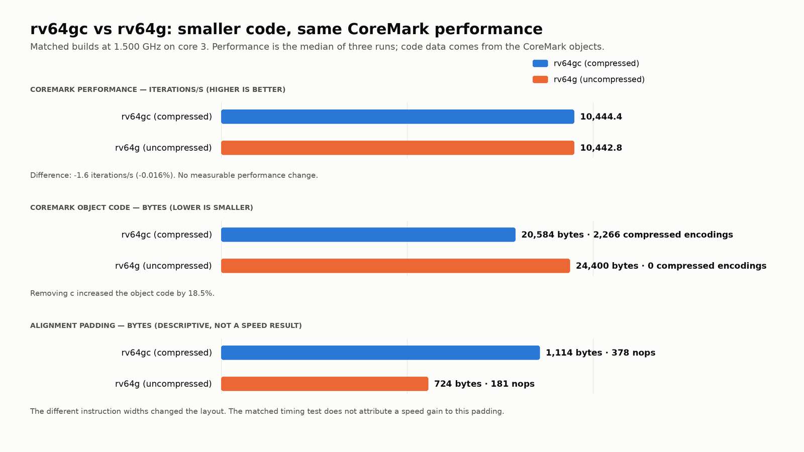
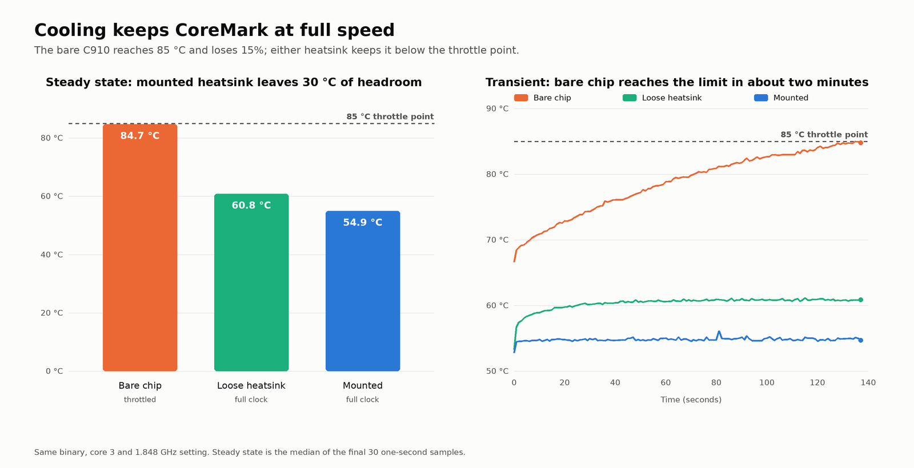
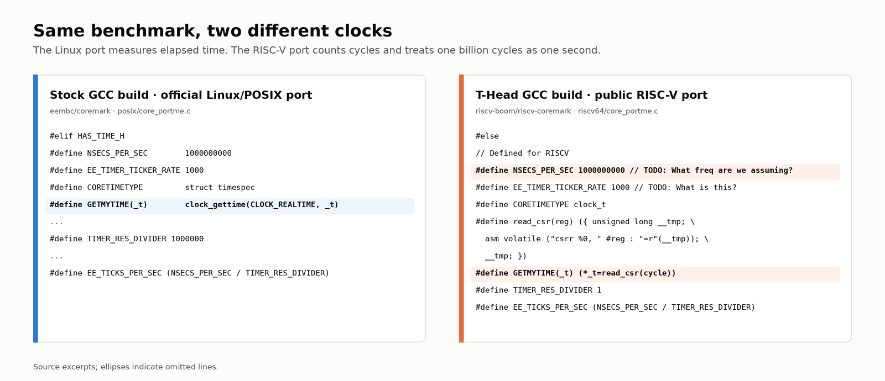

Reproducing the Lichee Pi 4A's official CoreMark score, one fix at a time
Compiler options were worth 1.77×. System-side controls were worth 0.1%. Cooling mattered only when the operating system began to throttle the processor.
Sipeed advertises 13,220 CoreMark for the Lichee Pi 4A, or 7.15 CoreMark/MHz. I was able to reach 12,897—97.6% of Sipeed's figure—at 6.98 CoreMark/MHz, using the documented compiler version and flags. The path to that result was more interesting than the final score: the compiler options were worth 1.77×, while the usual system-side controls were worth only 0.1%. Cooling did not matter until the chip reached 85 °C, at which point the OS started throttling the system and the score fell by 15%.
This article follows that path one step at a time. Reliable benchmarking is a system-level exercise: the application, operating system, compiler, and hardware configuration all matter simultaneously.
The target and method
Sipeed's benchmark page provides two single-core runs at 1.85 GHz:
| Build | Compiler | Iterations/s | CoreMark/MHz |
|---|---|---|---|
| Public toolchain | GCC 13.1.0 | 9,175 | 4.96 |
| T-Head toolchain | GCC 10.4.0 (T-Head patched) | 13,220 | 7.15 |
The recipe is the official EEMBC CoreMark and one make line:
make XCFLAGS="-march=rv64gv0p7_zfh_xtheadc -O3 -funroll-all-loops -finline-limit=500 \
-fgcse-sm -fno-schedule-insns -msignedness-cmpiv -fno-code-hoisting \
-mno-thread-jumps1 -mno-iv-adjust-addr-cost -mno-expand-split-imm"CoreMark/second is the standard reportable metric, but I also use CoreMark/MHz to compare CPU performance independently of operating frequency. That normalization is useful here because CoreMark is compute-bound; it should not be generalized to I/O- or memory-bound benchmarks.
Test setup
- System: Lichee Pi 4A with 8 GB RAM, running RevyOS 2026-05 (Linux 6.6.137, Debian 13).
- Compiler: XuanTie GCC V2.8.0, which is GCC 10.4.0 with T-Head's patches, used to cross-compile from x86-64. Sipeed used this version for their public-facing data, and I have used the same for consistency.
- Clock control: Frequency pinned at 1.848 GHz with the
performancegovernor. - Affinity control: I kept the default Linux scheduler policy, but pinned every CoreMark run to core 3 with
taskset -c 3. - Cooling: A heatsink, a thermal pad, and an OS-controlled fan were fitted on the board for most experiments, unless stated otherwise. The impact of these choices on temperature, CPU frequency, and benchmark performance is discussed later.
- Runs: Three per build, using CoreMark's automatic iteration count so that each ran for at least 10 seconds. Variability was 0.1% to 1%, and I reported the median.
Verifying the clock
The per-MHz score is derived as follows:
Because frequency appears directly in the score and can vary for several reasons, I checked the delivered clock against the requested clock. For this purpose, I wrote a small perf_event_open microbenchmark that estimated frequency using the clock cycle counter and elapsed wall-clock time. Requested frequencies of 1,500 MHz and 1,848 MHz measured 1,499.4 MHz and 1,847.2 MHz across repeated runs (about 0.04% below nominal). Satisfied with the stability, I used the nominal 1,848 MHz for the experiments below.
The optimization ladder
I started with a plain -O2 build under the schedutil governor, then changed one thing at a time: system controls first, compiler options next. All runs used the same board on the same day with the heatsink fitted, and each row includes every change above it.
| # | Cumulative change | Iterations/s | CoreMark/MHz | Step | What it showed |
|---|---|---|---|---|---|
| 0 | Baseline: -O2, schedutil, no pinning | 7,278 | 3.94 | – | Starting point |
| 1 | performance governor | 7,284 | 3.94 | +0.1% | RevyOS's default; no material gain |
| 2 | Pin the task to core 3 | 7,283 | 3.94 | 0% | Better control, not more speed |
| 3 | Pin the clock at 1.848 GHz | 7,289 | 3.94 | +0.1% | Better control, not more speed |
| 4 | -O3 | 8,094 | 4.38 | +11% | First clear compiler gain |
| 5 | T-Head instructions (-march=…_xtheadc) | 10,314 | 5.58 | +27% | Largest single improvement |
| 6 | -funroll-all-loops -finline-limit=500 | 11,710 | 6.34 | +14% | Second-largest improvement |
| 7 | -fgcse-sm -fno-schedule-insns -fno-code-hoisting | 12,120 | 6.56 | +3.5% | Modest but repeatable gain |
| 8 | T-Head-only options (-msignedness-cmpiv …) | 12,859 | 6.96 | +6.1% | Vendor-specific tuning still mattered |
| 9 | Sipeed's -march=rv64gv0p7_zfh_xtheadc | 12,897 | 6.98 | +0.3% | Final result: 97.6% of Sipeed's score |
Run-to-run spread was tiny: within ±0.1% for every row except #5, which varied by about 1%. In a separate test, -mtune=c910 also made no difference: 6.96 CoreMark/MHz either way. Perhaps -fno-schedule-insns disables the pass that would have benefited from it.
What Sipeed's -march actually changed
Sipeed's rv64gv0p7 target includes version 0.7.1 of the RISC-V vector extension, but the compiler emitted no vector instructions for CoreMark. Vector support therefore did not produce the row 9 result.
The other detail is what the target omits: rv64g has no compressed instruction extension (c), so it cannot use the smaller 16-bit encodings. I expected that to hurt performance through extra instruction-fetch and cache pressure. It did not. In a matched rv64gc test, the compressed and uncompressed builds differed by only 0.016%. For CoreMark on this C910, instruction fetch was not the limiting factor.

rv64gc reduced code size without measurably changing CoreMark performance.The layout still changed: row 9's uncompressed objects contain 181 nops (724 bytes), compared with 378 nops (1,114 bytes) in row 8. The matched test found no measurable compression effect, so row 9's 0.3% ladder gain cannot confidently be attributed to that padding.
Thermal throttling and cooling
The system-side controls changed the score by almost nothing because the hardware underneath was in order. I kept row 9 unchanged—1.848 GHz, core 3, same binary—and varied only the cooling. Temperature, actual clock, and throttling state were logged every second across six back-to-back runs, extended by 14 runs once the bare chip began throttling.
| Cooling | Chip temperature | Clock actually delivered | Iterations/s |
|---|---|---|---|
| Heatsink mounted with a thermal pad, fan on | 53 → 54 °C | 1,848 MHz, all the time | 12,871–12,914 |
| Heatsink resting loosely on the chip, fan on | 53 → 61 °C | 1,848 MHz, all the time | 12,869–12,880 |
| Bare chip, starting warm | 66 → 85 °C, still climbing | 1,848 MHz, all the time | 12,870–12,888 |
| Bare chip, once it reached 85 °C (14 more runs) | held at 83–85 °C | 61% at 1,608 MHz, 29% at 1,500 MHz, 4% at 1,848 MHz | 10,900–11,050 (−15%) |
| Heatsink put back, starting hot | 61 → 65 °C | 1,848 MHz, all the time | 12,871–12,889 |

What the logs showed
- Below 85 °C, temperature did not affect performance. A mounted heatsink, a loose heatsink, and no heatsink all produced the same score while the CPU delivered 1.848 GHz.
- At 85 °C, the kernel intervened. Its
cpufreqcooling policy held the bare chip at 83–85 °C, mostly at 1,608 MHz, and the score fell by 15%. CoreMark still printed “Correct operation validated”; only the temperature and frequency logs revealed the throttling. - Recovery was immediate. Replacing the heatsink restored the full clock and a score of 12,886 on the first run.
Without the temperature and frequency logs, that 15% thermal loss would look exactly like a software regression.
How a timer oversight led to the wrong conclusion
This was actually my second attempt at this benchmark. About a year ago, I ran it on the same board, once with the T-Head GCC toolchain and once with a stock GCC. The two builds reported 5,134 and 5,145 iterations per second, respectively. Practically identical. I concluded that the custom toolchain made no difference, and I moved on. That conclusion was wrong.
The mistake was in my measurement setup: I compared the final scores without checking how each platform port measured time. For the T-Head build, I used the public riscv-boom/riscv-coremark wrapper. Its build script produces a coremark.riscv binary with the included riscv64 port, so it looked like a reasonable starting point. What I missed was that this was a third-party port, not T-Head code or CoreMark's official Linux port.
CoreMark delegates timing to the platform port, so my two binaries were using different rulers:
- The stock build used CoreMark's Linux/POSIX port, which reads wall-clock time.
- The T-Head-compiled build used the wrapper's RISC-V port, which reads the cycle counter and divides by a hard-coded 1,000,000,000. It assumes a 1 GHz CPU; the source even says
// TODO: What freq are we assuming?. My board ran at 1.848 GHz.

The reported 5,134 was therefore iterations per billion cycles, not per second. At 1.848 GHz, it becomes roughly 9,490 iterations per second, or 5.13 CoreMark/MHz. The stock build's 5,145 was only 2.78 CoreMark/MHz. The T-Head-compiled build had been about 1.85× faster all along; the results looked equal only because their units differed. That low-level oversight propagated upward: the wrong elapsed time produced the wrong score, and the wrong score produced the wrong conclusion about the compiler.
Lesson learnt: a benchmark number on its own is not a result. The timer, CPU frequency, affinity, thermal state, and surrounding workload belong next to the score.
What next?
The defensible result today is that this board reproducibly reaches 12,897 iterations per second at 1.848 GHz with the documented compiler and flags: 6.98 CoreMark/MHz and 97.6% of Sipeed's figure. The remaining work is:
- Investigate the remaining 2.4%: compare a native, dynamically linked build with my cross-compiled static build, investigate the vendor kernel and firmware, and determine what clock Sipeed's board actually delivered.
- Try 2 GHz: Sipeed says that some boards can reach it. I want to measure the actual clock, scaling, temperature, and stability.
- Measure power: compare board-input power at idle and under load across the same frequency steps.
- Expand the workloads: run four-thread CoreMark, then try OpenSSL, Dhrystone, Geekbench, and smaller tests that isolate parts of the C910.
- Compare other boards: repeat the method on Raspberry Pi and other RISC-V systems to separate the CPU, compiler, clock policy, cooling, and surrounding system.
If there is another benchmark or configuration that would make the comparison more useful, please suggest it. I will release the build and measurement scripts once the repository is tidied up.